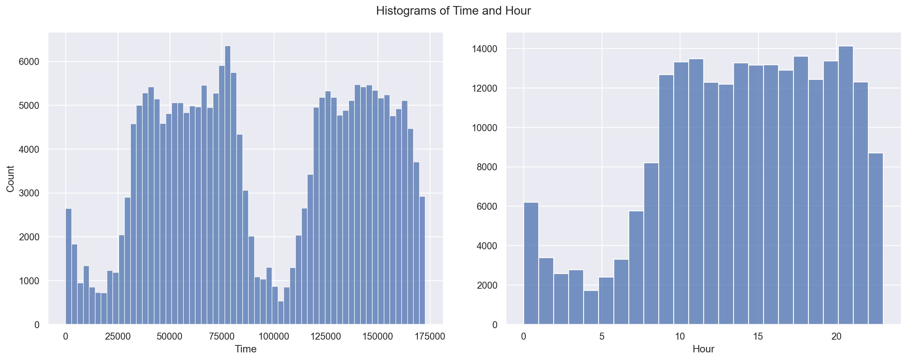
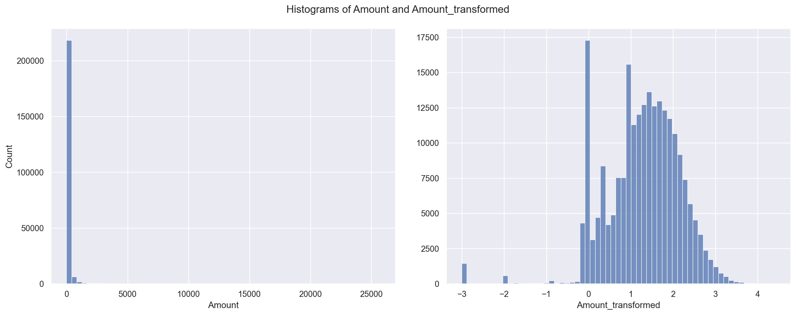
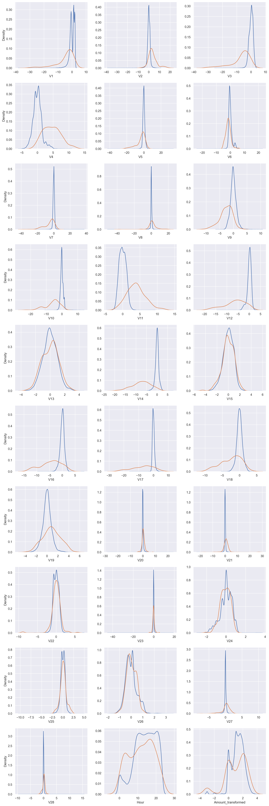
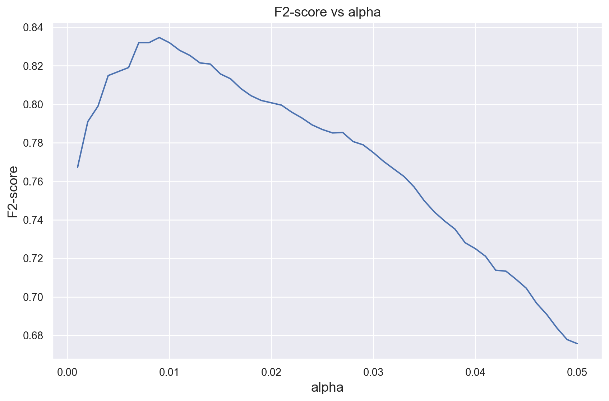
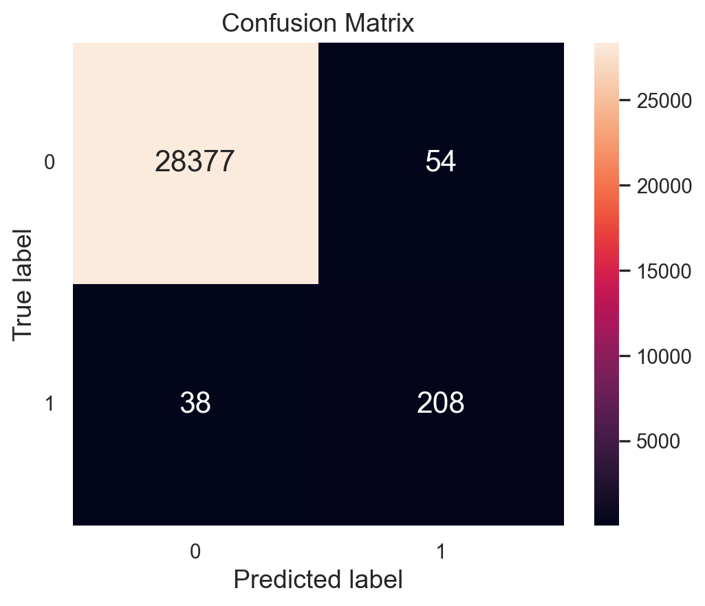

# File system manangement
import time, psutil, os, gc
# Mathematical functions
import math
# Data manipulation
import numpy as np
import pandas as pd
# Plotting and visualization
import matplotlib.pyplot as plt
import matplotlib.patches as mpatches
import seaborn as sns
sns.set_theme()
import plotly.express as px
import plotly.graph_objects as go
from plotly.subplots import make_subplots
from plotly.offline import init_notebook_mode, iplot
init_notebook_mode(connected=True)
# Train-test split
from sklearn.model_selection import train_test_split
# Progress bar for loop
from tqdm.contrib import itertoolsContents:
Introduction to Anomaly or Outlier Detection.
Example of Anomaly Detection with real data Credit Card dataset
Data Visualization
Data processing
Anomaly Detection
Anomaly or Outlier Detection
Anomaly or outlier detection is a crucial aspect of data analysis and machine learning, involving the identification of data points or observations that deviate significantly from the expected or normal behavior within a dataset. These anomalies, often representing rare events, errors, or unusual patterns, are detected using various techniques such as statistical methods, machine learning algorithms, distance-based approaches, and domain-specific rules, enabling their recognition in applications like fraud detection, quality control, network security, and predictive maintenance, ultimately enhancing decision-making and problem-solving in diverse fields.
In the context of machine learning, anomaly detection can be approached using various techniques and algorithms, including:
Statistical Methods: Statistical approaches involve using statistical measures such as mean, standard deviation, and probability distributions to identify outliers. Data points that fall outside predefined statistical thresholds are considered anomalies.
Machine Learning Algorithms: Machine learning models can be trained to detect anomalies. Some popular algorithms for this purpose include:
One-Class SVM (Support Vector Machine): It is a supervised learning algorithm that learns to classify data points as either “normal” or “anomalous” based on the majority class (usually “normal” data).
Isolation Forest: This algorithm isolates anomalies by recursively partitioning the data into subsets, making it efficient for high-dimensional datasets.
Autoencoders: These neural networks are used for unsupervised learning and can learn to reconstruct normal data. Data points that are poorly reconstructed are considered anomalies.
Distance-Based Methods: These methods compute distances or dissimilarities between data points and identify outliers as those with unusually large distances from their nearest neighbors. k-nearest neighbors (KNN) and DBSCAN (Density-Based Spatial Clustering of Applications with Noise) are examples of distance-based techniques.
Time Series Anomaly Detection: In time series data, specialized methods like Seasonal Decomposition of Time Series (STL), Exponential Smoothing, or Recurrent Neural Networks (RNNs) can be used to detect anomalies over time.
Rule-Based Systems: Domain-specific knowledge can be applied to define rules that identify anomalies based on specific criteria. This approach is often used in fields like cybersecurity.
Unsupervised and Semi-Supervised Learning: Anomaly detection can be performed in an unsupervised manner, where the model learns from data without the need for labeled anomalies, or in a semi-supervised manner with a limited amount of labeled data.
The choice of method depends on the characteristics of the data, the specific problem, and the available resources. Anomaly detection is a valuable tool in machine learning for uncovering irregularities and potential issues within datasets, leading to improved decision-making and problem-solving in various domains.
Importing libraries
Runtime and memory usage
# Recording the starting time, complemented with a stopping time check in the end to compute process runtime
start = time.time()
# Class representing the OS process and having memory_info() method to compute process memory usage
process = psutil.Process(os.getpid())The Anomaly Detection in credit card transactions is aiming to identify fraudulent transactions among a highly imbalanced dataset. Anomalies, or outliers, are rare observations that deviate significantly from the majority of data points. Anomaly detection techniques, including machine learning, are employed to automate this process. The project’s objective is to fit a probability distribution based on authentic transactions and use it to identify new transactions as authentic or fraudulent, with the target variable playing no role in constructing the distribution.
The evaluation metric considers True Positives (correctly predicting positive outcomes), True Negatives (correctly predicting negative outcomes), False Positives (incorrectly predicting positive outcomes), and False Negatives (incorrectly predicting negative outcomes). Metrics like Precision, Recall, F1-Score, and MCC are used to evaluate model performance. F2-Score is given special importance due to the higher cost associated with false negatives in this context.
Feature selection is crucial due to high dimensionality, with 30 features in the dataset. Features are selected based on their ability to distinguish between authentic and fraudulent transactions, considering the distributions of each feature for both target classes. Features exhibiting distinct distributions are retained for classification purposes.
The dataset contains information on credit card transactions made by European cardholders and can be accessed via Kaggle. The data includes transaction time, PCA-transformed features (V1 to V28), transaction amount, and a binary class variable indicating authenticity (0 for authentic, 1 for fraudulent).
# Loading the data
data = pd.read_csv('C:/Users/Lenovo/Desktop/MLBlog-gh-pages/posts/anomaly-detection/creditcard.csv')
print(pd.Series({"Memory usage": "{:.2f} MB".format(data.memory_usage().sum()/(1024*1024)),
"Dataset shape": "{}".format(data.shape)}).to_string())
data.head()Memory usage 67.36 MB
Dataset shape (284807, 31)| Time | V1 | V2 | V3 | V4 | V5 | V6 | V7 | V8 | V9 | ... | V21 | V22 | V23 | V24 | V25 | V26 | V27 | V28 | Amount | Class | |
|---|---|---|---|---|---|---|---|---|---|---|---|---|---|---|---|---|---|---|---|---|---|
| 0 | 0.0 | -1.359807 | -0.072781 | 2.536347 | 1.378155 | -0.338321 | 0.462388 | 0.239599 | 0.098698 | 0.363787 | ... | -0.018307 | 0.277838 | -0.110474 | 0.066928 | 0.128539 | -0.189115 | 0.133558 | -0.021053 | 149.62 | 0 |
| 1 | 0.0 | 1.191857 | 0.266151 | 0.166480 | 0.448154 | 0.060018 | -0.082361 | -0.078803 | 0.085102 | -0.255425 | ... | -0.225775 | -0.638672 | 0.101288 | -0.339846 | 0.167170 | 0.125895 | -0.008983 | 0.014724 | 2.69 | 0 |
| 2 | 1.0 | -1.358354 | -1.340163 | 1.773209 | 0.379780 | -0.503198 | 1.800499 | 0.791461 | 0.247676 | -1.514654 | ... | 0.247998 | 0.771679 | 0.909412 | -0.689281 | -0.327642 | -0.139097 | -0.055353 | -0.059752 | 378.66 | 0 |
| 3 | 1.0 | -0.966272 | -0.185226 | 1.792993 | -0.863291 | -0.010309 | 1.247203 | 0.237609 | 0.377436 | -1.387024 | ... | -0.108300 | 0.005274 | -0.190321 | -1.175575 | 0.647376 | -0.221929 | 0.062723 | 0.061458 | 123.50 | 0 |
| 4 | 2.0 | -1.158233 | 0.877737 | 1.548718 | 0.403034 | -0.407193 | 0.095921 | 0.592941 | -0.270533 | 0.817739 | ... | -0.009431 | 0.798278 | -0.137458 | 0.141267 | -0.206010 | 0.502292 | 0.219422 | 0.215153 | 69.99 | 0 |
5 rows × 31 columns
Train-Validation-Test Split
# Splitting the data by target class
data_0, data_1 = data[data['Class'] == 0], data[data['Class'] == 1]
# Feature-target split
X_0, y_0 = data_0.drop('Class', axis = 1), data_0['Class']
X_1, y_1 = data_1.drop('Class', axis = 1), data_1['Class']
# Splitting the authentic class and constructing the training set
X_train, X_test, y_train, y_test = train_test_split(X_0, y_0, test_size = 0.2, random_state = 40)
X_val, X_test, y_val, y_test = train_test_split(X_test, y_test, test_size = 0.5, random_state = 40)
data_val_1, data_test_1 = pd.concat([X_val, y_val], axis = 1), pd.concat([X_test, y_test], axis = 1)
# Splitting the fraudulent class
X_val, X_test, y_val, y_test = train_test_split(X_1, y_1, test_size = 0.5, random_state = 40)
data_val_2, data_test_2 = pd.concat([X_val, y_val], axis = 1), pd.concat([X_test, y_test], axis = 1)
# Merging data to construct the validation set and the test set
data_val, data_test = pd.concat([data_val_1, data_val_2], axis = 0), pd.concat([data_test_1, data_test_2], axis = 0)
X_val, y_val = data_val.drop('Class', axis = 1), data_val['Class']
X_test, y_test = data_test.drop('Class', axis = 1), data_test['Class']# Distribution of authentic and fraudulent transactions over training, validation and test set
labels = ['Train', 'Validation', 'Test']
values_0 = [len(y_train[y_train == 0]), len(y_val[y_val == 0]), len(y_test[y_test == 0])]
values_1 = [len(y_train[y_train == 1]), len(y_val[y_val == 1]), len(y_test[y_test == 1])]
fig = make_subplots(rows = 1, cols = 2, specs = [[{'type': 'domain'}, {'type': 'domain'}]])
fig.add_trace(go.Pie(values = values_0, labels = labels, hole = 0.5, textinfo = 'percent', title = "Authentic"),
row = 1, col = 1)
fig.add_trace(go.Pie(values = values_1, labels = labels, hole = 0.5, textinfo = 'percent', title = "Fraudulent"),
row = 1, col = 2)
text_title = "Distribution of authentic and fraudulent transactions over training, validation and test set"
fig.update_layout(height = 500, width = 800, showlegend = True, title = dict(text = text_title, x = 0.5, y = 0.95))
fig.show()# Setting the number of bins
bins_train = math.floor(len(X_train)**(1/3))Feature Engineering
Time
# Decomposing time
for df in [X_train, X_val, X_test]:
df['Day'], temp = df['Time'] // (24*60*60), df['Time'] % (24*60*60)
df['Hour'], temp = temp // (60*60), temp % (60*60)
df['Minute'], df['Second'] = temp // 60, temp % 60
X_train[['Time', 'Day', 'Hour', 'Minute', 'Second']].head()| Time | Day | Hour | Minute | Second | |
|---|---|---|---|---|---|
| 19594 | 30401.0 | 0.0 | 8.0 | 26.0 | 41.0 |
| 124712 | 77397.0 | 0.0 | 21.0 | 29.0 | 57.0 |
| 167920 | 118964.0 | 1.0 | 9.0 | 2.0 | 44.0 |
| 47377 | 43191.0 | 0.0 | 11.0 | 59.0 | 51.0 |
| 41731 | 40804.0 | 0.0 | 11.0 | 20.0 | 4.0 |
# Visualization
fig, ax = plt.subplots(1, 2, figsize = (15, 6), sharey = False)
sns.histplot(data = X_train, x = 'Time', bins = bins_train, ax = ax[0])
sns.histplot(data = X_train, x = 'Hour', bins = 24, ax = ax[1])
ax[1].set_ylabel(" ")
plt.suptitle("Histograms of Time and Hour", size = 14)
plt.tight_layout()
plt.show()
Amount
The distribution of Amount has extreme positive skewness. We apply the transformation x↦log(x+0.001) to this column and form the new column Amount_transformed. The positive constant 0.001 is added to deal with the zero-amount transactions, which leads to log 0, an undefined quantity.
# Transformation of 'Amount'
for df in [X_train, X_val, X_test]:
df['Amount_transformed'] = np.log10(df['Amount'] + 0.001)# Visualization
fig, ax = plt.subplots(1, 2, figsize = (15, 6), sharey = False)
sns.histplot(data = X_train, x = 'Amount', bins = bins_train, ax = ax[0])
sns.histplot(data = X_train, x = 'Amount_transformed', bins = bins_train, ax = ax[1])
ax[1].set_ylabel(" ")
plt.suptitle("Histograms of Amount and Amount_transformed", size = 14)
plt.tight_layout()
plt.show()
# Discarding unnecessary columns
for df in [X_train, X_val, X_test]:
df.drop(['Time', 'Day', 'Minute', 'Second', 'Amount'], axis = 1, inplace = True)Feature Selection
# Comparison of feature distributions for different target classes
data_val = pd.concat([X_val, y_val], axis = 1)
data_val_0, data_val_1 = data_val[data_val['Class'] == 0], data_val[data_val['Class'] == 1]
cols, ncols = list(X_val.columns), 3
nrows = math.ceil(len(cols) / ncols)
fig, ax = plt.subplots(nrows, ncols, figsize = (4.5 * ncols, 4 * nrows))
for i in range(len(cols)):
sns.kdeplot(data_val_0[cols[i]], ax = ax[i // ncols, i % ncols])
sns.kdeplot(data_val_1[cols[i]], ax = ax[i // ncols, i % ncols])
if i % ncols != 0:
ax[i // ncols, i % ncols].set_ylabel(" ")
plt.tight_layout()
plt.show()
# Feature selection
cols = ['V4', 'V11', 'V12', 'V14', 'V16', 'V17', 'V18', 'V19', 'Hour']
X_train_fs, X_val_fs, X_test_fs = X_train[cols], X_val[cols], X_test[cols]
X_train_fs.head()| V4 | V11 | V12 | V14 | V16 | V17 | V18 | V19 | Hour | |
|---|---|---|---|---|---|---|---|---|---|
| 19594 | -0.706232 | 2.027925 | 0.535822 | 0.250769 | 0.773615 | 0.449717 | -1.963208 | 0.613481 | 8.0 |
| 124712 | 1.474933 | -1.154523 | 0.263527 | 0.316174 | -1.029415 | 1.030772 | -0.438839 | 0.529080 | 21.0 |
| 167920 | 4.840766 | -2.242431 | 0.034829 | -0.546349 | -0.070375 | 1.033695 | 0.531801 | 1.215045 | 9.0 |
| 47377 | 0.565273 | -0.157045 | -0.548790 | 0.419194 | 0.183518 | -0.681323 | 0.911357 | 1.318132 | 11.0 |
| 41731 | -0.428860 | -0.580964 | -0.609099 | -0.187948 | 1.226723 | 0.104368 | -0.995711 | 0.420557 | 11.0 |
Implementing Anomaly Detection
# Normal pdf
def normal_density(x, mu, sigma):
"""
Computes univariate normal probability density function (pdf) with mean mu, standard deviation sigma
Args:
x (scalar) : input observation
mu (scalar) : mean
sigma (scalar): standard deviation (> 0)
Returns:
f (scalar): value of the univariate normal pdf
"""
assert sigma > 0, "Standard deviation must be positive"
f = (1 / (sigma * np.sqrt(2 * np.pi))) * np.exp(- (1 / 2) * ((x - mu) / sigma)**2)
return f# Product of normal pdfs
def normal_product(x_vec, mu_vec, sigma_vec):
"""
Computes product of univariate normal densities
Args:
x_vec (array_like, shape (n,)) : vector of input observations
mu_vec (array_like, shape (n,)) : vector of means
sigma_vec (array_like, shape (n,)): vector of standard deviations (> 0)
Returns:
f (scalar): product of univariate normal densities
"""
assert min(sigma_vec) > 0, "Standard deviation must be positive"
assert len(mu_vec) == len(x_vec), "Length of mean vector does not match length of input vector"
assert len(sigma_vec) == len(x_vec), "Length of standard deviation vector does not match length of input vector"
f = 1
for i in range(len(x_vec)):
f = f * normal_density(x_vec[i], mu_vec[i], sigma_vec[i])
return fNext, we compute the vector of means and vector of standard deviations for the features in the training set. These estimates characterize the joint probability density function of the features, which will be used to detect anomalous observations.
# Model fitting
mu_train, sigma_train = X_train_fs.mean(), X_train_fs.std()# Function to predict anomaly based on probability density threshold
def model_normal(X, epsilon):
"""
Anomaly detection model
Args:
X (DataFrame, shape (m, n)): DataFrame of features
epsilon (scalar) : threshold density value (> 0)
Returns:
y (array_like, shape (m,)): predicted class labels
"""
y = []
for i in X.index:
prob_density = normal_product(X.loc[i].tolist(), mu_train, sigma_train)
y.append((prob_density < epsilon).astype(int))
return yThreshold Tuning on Validation Set
First, we construct some functions to compute and display the confusion matrix and to compute the F2-score, given the true labels and the predicted labels of the target.
# Function to compute confusion matrix
def conf_mat(y_test, y_pred):
"""
Computes confusion matrix
Args:
y_test (array_like): true binary (0 or 1) labels
y_pred (array_like): predicted binary (0 or 1) labels
Returns:
confusion_mat (array): A 2D array representing a 2x2 confusion matrix
"""
y_test, y_pred = list(y_test), list(y_pred)
count, labels, confusion_mat = len(y_test), [0, 1], np.zeros(shape = (2, 2), dtype = int)
for i in range(2):
for j in range(2):
confusion_mat[i][j] = len([k for k in range(count) if y_test[k] == labels[i] and y_pred[k] == labels[j]])
return confusion_mat# Function to print confusion matrix
def conf_mat_heatmap(y_test, y_pred):
"""
Prints confusion matrix
Args:
y_test (array_like): true binary (0 or 1) labels
y_pred (array_like): predicted binary (0 or 1) labels
Returns:
Nothing, prints a heatmap representing a 2x2 confusion matrix
"""
confusion_mat = conf_mat(y_test, y_pred)
labels, confusion_mat_df = [0, 1], pd.DataFrame(confusion_mat, range(2), range(2))
plt.figure(figsize = (6, 4.75))
sns.heatmap(confusion_mat_df, annot = True, annot_kws = {"size": 16}, fmt = 'd')
plt.xticks([0.5, 1.5], labels, rotation = 'horizontal')
plt.yticks([0.5, 1.5], labels, rotation = 'horizontal')
plt.xlabel("Predicted label", fontsize = 14)
plt.ylabel("True label", fontsize = 14)
plt.title("Confusion Matrix", fontsize = 14)
plt.grid(False)
plt.show()# Function to compute and return f2_score
def f2_score(y_test, y_pred):
"""
Computes accuracy, given true and predicted binary (0 or 1) labels
Args:
y_test (array_like): true binary (0 or 1) labels
y_pred (array_like): predicted binary (0 or 1) labels
Returns:
f2 (float): accuracy obtained from y_test and y_pred
"""
confusion_mat = conf_mat(y_test, y_pred)
tn, fp, fn, tp = confusion_mat[0, 0], confusion_mat[0, 1], confusion_mat[1, 0], confusion_mat[1, 1]
f2 = (5 * tp) / ((5 * tp) + (4 * fn) + fp)
return f2# Tuning the threshold of density value
alpha_list, f2_list, f2_max, alpha_opt, y_val_pred_opt = [], [], 0.0, 0.0, np.zeros(len(y_val))
for alpha, j in itertools.product(np.arange(0.001, 0.051, 0.001), range(1)):
y_val_pred = model_normal(X_val_fs, epsilon = alpha**X_val_fs.shape[1])
f2 = f2_score(y_val, y_val_pred)
alpha_list.append(alpha)
f2_list.append(f2)
if f2 > f2_max:
alpha_opt = alpha
y_val_pred_opt = y_val_pred
f2_max = f2C:\Users\Lenovo\AppData\Local\Temp\ipykernel_47740\516892871.py:17: FutureWarning:
Series.__getitem__ treating keys as positions is deprecated. In a future version, integer keys will always be treated as labels (consistent with DataFrame behavior). To access a value by position, use `ser.iloc[pos]`
# Plotting F2-score over alpha
plt.figure(figsize = (9, 6))
plt.plot(alpha_list, f2_list)
plt.xlabel("alpha", fontsize = 14)
plt.ylabel("F2-score", fontsize = 14)
plt.title("F2-score vs alpha", fontsize = 14)
plt.tight_layout()
plt.show()
# Tuning summary
print(pd.Series({
"Optimal alpha": alpha_opt,
"Optimal F2-score": f2_score(y_val, y_val_pred_opt)
}).to_string())Optimal alpha 0.009000
Optimal F2-score 0.834671# Confusion matrix for predictions on the validation set
conf_mat_heatmap(y_val, y_val_pred_opt)
Prediction and Evaluation on Test Set
# Function to compute and print evaluation metrics
def evaluation(y_test, y_pred):
confusion_mat = conf_mat(y_test, y_pred)
tn, fp, fn, tp = confusion_mat[0, 0], confusion_mat[0, 1], confusion_mat[1, 0], confusion_mat[1, 1]
print(pd.Series({
"Accuracy": (tp + tn) / (tn + fp + fn + tp),
"Precision": tp / (tp + fp),
"Recall": tp / (tp + fn),
"F1-score": (2 * tp) / ((2 * tp) + fn + fp),
"F2-score": (5 * tp) / ((5 * tp) + (4 * fn) + fp),
"MCC": ((tp * tn) - (fp * fn)) / np.sqrt((tp + fp) * (tp + fn) * (tn + fp) * (tn + fn))
}).to_string())# Prediction and evaluation on the test set
y_test_normal = model_normal(X_test_fs, epsilon = alpha_opt**X_test_fs.shape[1])
evaluation(y_test, y_test_normal)C:\Users\Lenovo\AppData\Local\Temp\ipykernel_47740\516892871.py:17: FutureWarning:
Series.__getitem__ treating keys as positions is deprecated. In a future version, integer keys will always be treated as labels (consistent with DataFrame behavior). To access a value by position, use `ser.iloc[pos]`
C:\Users\Lenovo\AppData\Local\Temp\ipykernel_47740\2892512474.py:11: RuntimeWarning:
overflow encountered in scalar multiply
Accuracy 0.996687
Precision 0.798419
Recall 0.821138
F1-score 0.809619
F2-score 0.816492
MCC 171.242437# Confusion matrix for predictions on the test set
conf_mat_heatmap(y_test, y_test_normal)Conclusion
Here, we addressed the challenge of a highly imbalanced dataset in credit card transactions, where fraudulent transactions are significantly less frequent compared to legitimate ones. The approach involved sophisticated feature engineering, where we extracted ‘Hour’ from the ‘Time’ attribute and log-transformed the ‘Amount’ feature to correct for skewness, resulting in a new feature called ‘Amount_transformed’.
A crucial step in the analysis was the selection of key features that show distinct distribution patterns across the two classes of transactions. Out of 30 features engineered, 9 (V4, V11, V12, V14, V16, V17, V18, V19, and Hour) were identified as significantly influential in distinguishing between fraudulent and legitimate transactions. These features were used to fit a multivariate normal distribution to the training data, under the assumption of statistical independence among features, a reasonable assumption given that most of the features were obtained through PCA.
The final phase of the project involved optimizing a threshold for anomaly detection. This was achieved by iterating over a range of values and evaluating their performance using the F2-score on the validation set. The optimal threshold was found to be approximately 0.0099. With this threshold, the model achieved an F2-score of 0.834671 on the validation set. When applied to the test set, the model demonstrated a consistent performance with an F2-score of 0.816492. This method proved effective in flagging transactions as fraudulent based on their density values in the fitted distribution.